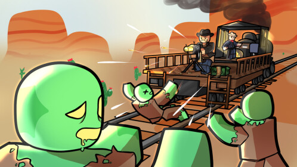

Dead Rails: Roblox's New Survival Game

DEAD RAILS
What is Dead Rails?
Dead Rails is a thrilling survival game on the Roblox platform where players must navigate a post-apocalyptic world filled with dangers and abandoned railways. The game combines elements of survival, crafting, and PvP combat as you team up with friends or go solo to become the last survivor.